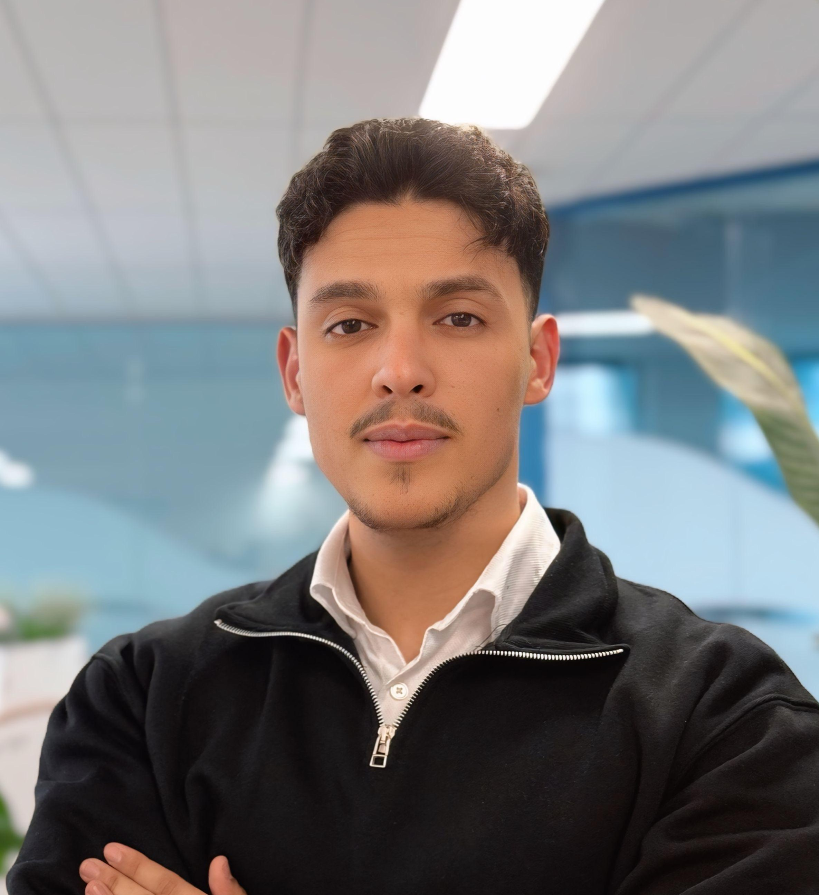
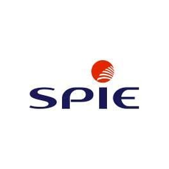
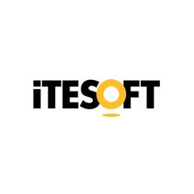
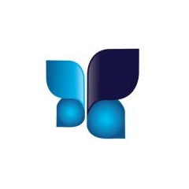

Salut, je suis
Ingénieur cybersécurité - je conçois des architectures sécurisées, j'analyse les menaces et je renforce la sécurité des infrastructures.
Recherche un CDI dès septembre 2026

Je suis ingénieur cybersécurité, diplômé de la grande école d'ingénieur Junia ISEN Lille. Rigoureux, analytique et curieux, je sais écouter et collaborer tout en étant force de proposition.
J'interviens sur tout le spectre de la sécurité : conception d'architectures (Firewall, WAF, XDR, EDR, PAM, SASE, SD-WAN), intégration et production, mais aussi sur le volet offensif (pentest, audit, exploitation de vulnérabilités) et défensif (durcissement, SOC, SIEM).
Mon objectif : renforcer la résilience des systèmes d'information face aux menaces.



Conception d'une architecture segmentée (VLAN / plan IP) intégrant pare-feu pfSense, IDS Snort, XDR Wazuh et SIEM ELK Stack, couplés à des serveurs de services critiques (DNS, DHCP, Syslog, RADIUS).
Audit de sécurité de l'application « Smabanki » : analyse du code source et attaques web (OWASP Top 10) pour évaluer la robustesse de l'authentification et des transactions.
Tests offensifs sur Windows et Linux : exploitation de failles critiques (EternalBlue), reverse shells, attaques MITM, DoS/DDoS et sniffing réseau.
Base de connaissances cyber (coffre-fort Obsidian) structurée par outils, techniques et commandes : méthodologies et antisèches pour le pentest et la défense.
Application de détection de vulnérabilités web : analyse de cibles, identification des failles et restitution des résultats dans une interface dédiée.
Implémentation d'une blockchain à partir de zéro — consensus PoW et PoS, contrats intelligents, portefeuilles numériques et collection de NFT.
Suite de tests automatisés garantissant la qualité des fonctionnalités clés d'Amazon.fr (recherche, comptes, panier) développée avec Playwright.
Plateforme web de création, gestion et correction automatisée de QCM, avec correction par reconnaissance d'images et système de notation complet.
Application web de mise en relation recruteurs–candidats (projet réalisé chez Adelpha Tech), avec gestion des offres et des candidatures.
Contribution front-end à une bibliothèque en ligne : composants UI (Modal, Navbar…) et pages de gestion des utilisateurs.
Walid est un collaborateur curieux, toujours motivé pour sortir de sa zone de confort et apprendre de nouvelles technologies. Il aime beaucoup travailler en équipe.
Cela a été un véritable plaisir de te compter parmi nous. Garde cet esprit curieux et sans peur. Il faut des personnes comme toi pour bousculer les certitudes. Tu as fait progresser ITESOFT, tu peux en être fier.